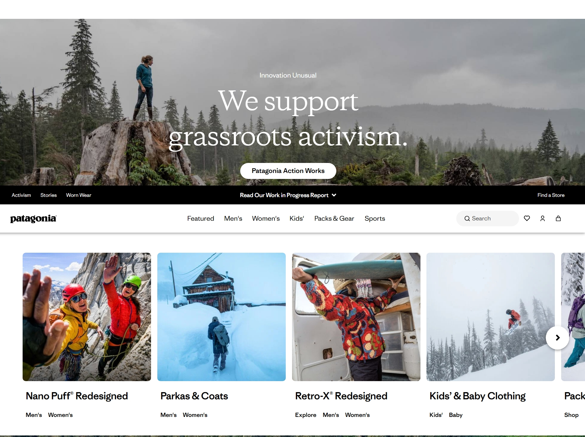
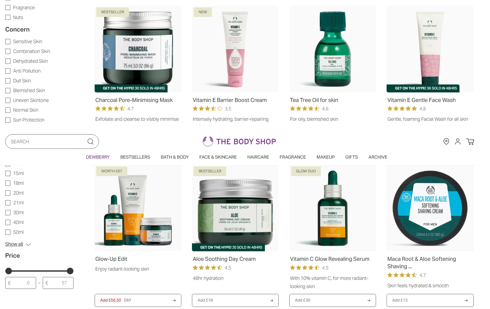
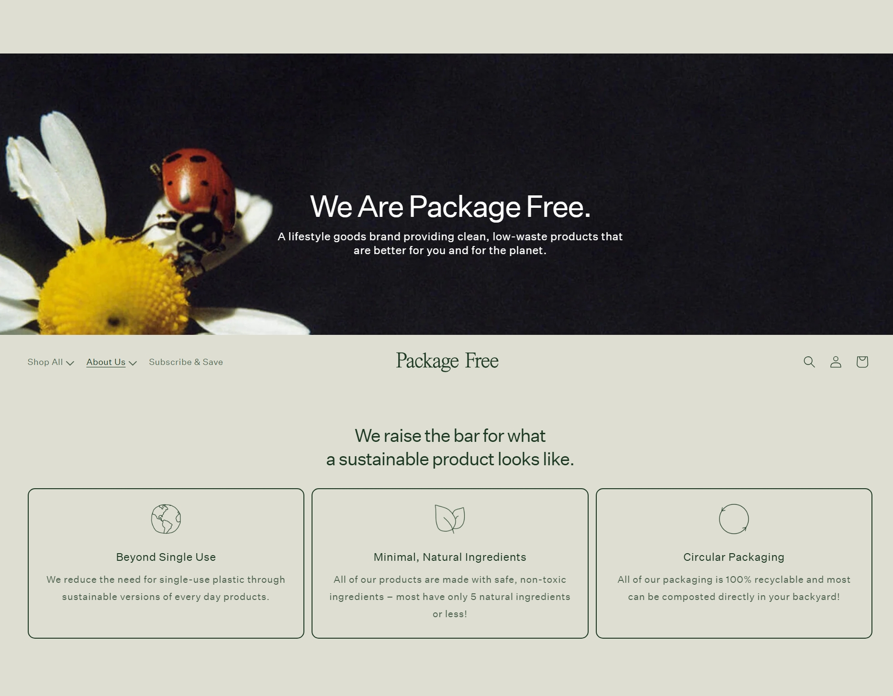

How We Conducted Our Research
We looked closely at three well-regarded eco shops, paying attention to layout, navigation, product pages, and the overall shopping flow. We kept the things that made shopping easier, added features that felt genuinely helpful, and tuned everything to be straightforward and trustworthy.
Websites That Inspired Us
1. Patagonia
Website: https://www.patagonia.com
Patagonia is known for taking environmental responsibility seriously and being transparent about its choices. We were inspired to make sustainability visible and meaningful across our product pages.
Quick Visual: EcoMart Home vs Patagonia


2. The Body Shop
Website: https://www.thebodyshop.com
The Body Shop shows how ethical sourcing and product stories build trust. Their focus on fair trade and cruelty-free products reminded us to surface a product's impact and story for shoppers.
Quick Visual: EcoMart Products vs The Body Shop


3. Package Free Shop
Website: https://packagefreeshop.com
Package Free Shop champions a zero-waste lifestyle and minimal packaging. Their approach reminded us that sustainability isn't just about what's inside the box—it's also about how it's packaged and shipped.
Quick Visual: EcoMart About Us vs Package Free Shop


Website Component Comparison
Below is a quick comparison of the key parts of a website—what we did at EcoMart, and how that compares to typical e-commerce sites. This helps explain the decisions we made and why.
| Component | EcoMart | Typical E-Commerce Websites | Differences & Improvements |
|---|---|---|---|
| Home Page | Hero section with rotating background images, featured products, and call-to-action buttons | Static hero images with promotional banners | EcoMart's dynamic hero rotator cycles through product images automatically, creating more visual engagement and movement compared to traditional static hero sections. |
| Products Page | Grid-based product cards with images, descriptions, prices, and real-time filtering (search, price range, sort) | Basic grid layout with limited filtering options | EcoMart combines search, price range slider, and multi-sort options in real-time. Most websites have basic filters, but EcoMart's integrated approach is more responsive and user-friendly. |
| Blog Page | Sustainability tips and eco-living content with featured hero section | Blog posts in list or card format with basic layouts | EcoMart integrates lifestyle advice with product recommendations, creating a seamless connection between educational content and e-commerce functionality. |
| Research Page | Transparent documentation of website research, competitor analysis, and feature comparison table | Websites typically don't include research or design methodology pages | EcoMart is unique in documenting the entire website design research process. This demonstrates academic rigor and transparency about design decisions. |
| About Us Page | Team member profiles with individual skills, contact form with validation, and help section with categorized support | Company information with team photos but limited personal detail | EcoMart adds detailed individual team member profiles with skills and achievements, plus a categorized help section. This personal touch builds stronger human connection with customers. |
What We Learned
We learned that simplicity, transparency, and helpful design make the biggest difference. Those lessons shaped our choices: clearer product details, easier filtering, and honest messaging that respects customers' time and values.
Conclusion
Our research guided the design choices behind EcoMart—combining solid best practices with small, practical improvements. We're proud of the result and continue to learn and iterate based on real user feedback.